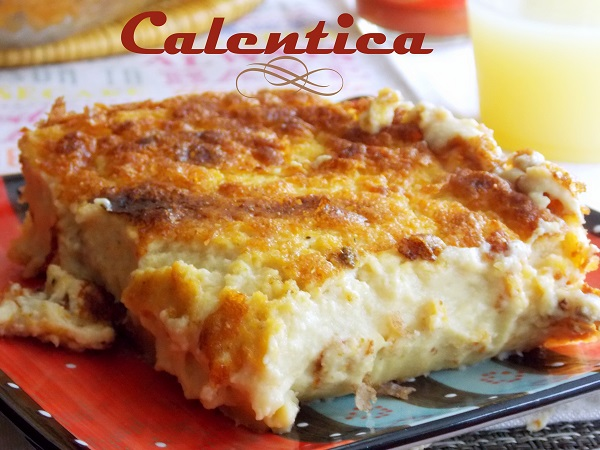

Karantita

Description
Karantika (كرنتيكا) à Oran/ garantita (قرنطيطة) à Alger
ou encore Calantica, Garantica, el-hami est un plat
algérien cuit au fout qui a un aspect de flan composé de 3
couches {la couche inférieure qui est épaisse, la seconde couche molle
et la 3 eme couche une fine pellicule gratinée}.
Ingrédients
- 200 g de farine de pois chiche
- 1 litres d'eau
- sel, cumin
- 1 oeufs
- 1/4 litre de lait
- 1 c-a-c soupe de moutarde
- 1 verre a thé d'huile
- 2 portions de vache qui rit
Etapes
- Mélanger la farine de pois chiche ainsi que le sel dans un grand saladier.
- Ajouter l'eau et mixer le tout.
- Dans un autre saladier ajouter l'oeuf bien fouetter le tout.
- Verser dans la préparation de pois chiche et eau. Ajouter la moutarde et l'huile + (2 portions fromage vache qui rit) et bien mélanger (on peut mélanger au mixer). Couvrir et laisser reposer 1h.
- Entre temps préchauffer le four à 200 C et placer un moule (en pyrex pour moi) pour le chauffer.
- Huiler le moule et verser la préparation. Ajouter 2 c-a-soupe d'huile et mélanger à la fourchette.
- Cuire durant 20 minutes (30 minutes pour moi tout dépend du four) dans un four à chaleur tournante (si vous n'avez pas de four à chaleur tournante en fin de cuisson allumer le grill)
- A la sortie du four parsemer de cumin. Servir avec du bon pain et la harissa